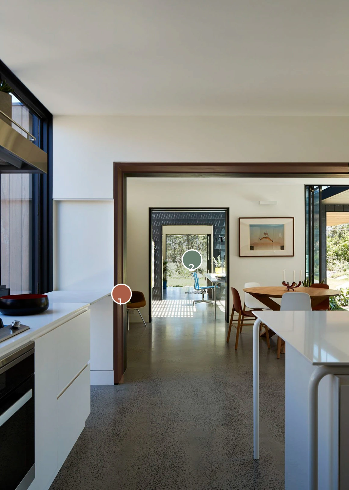
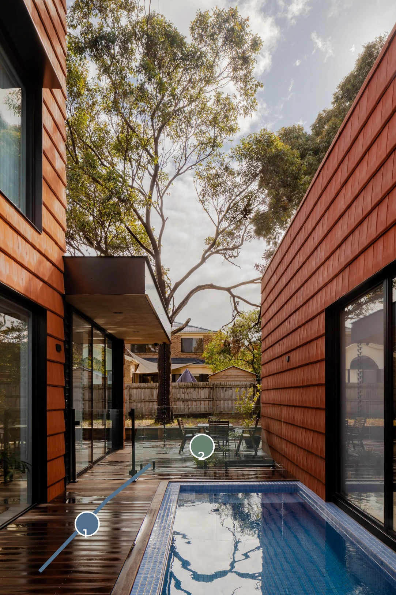
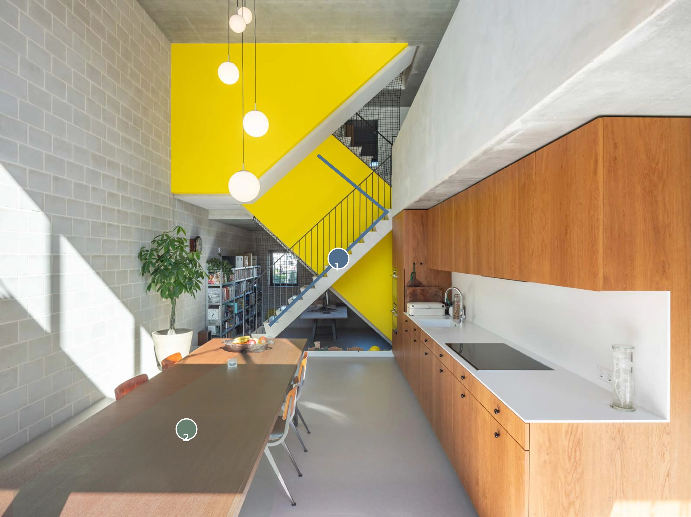
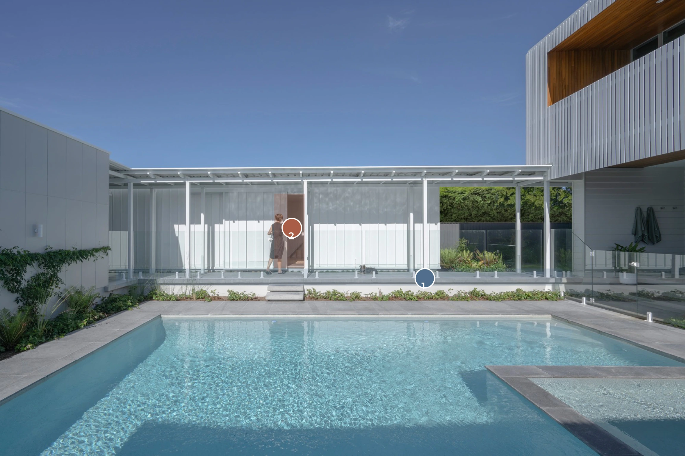
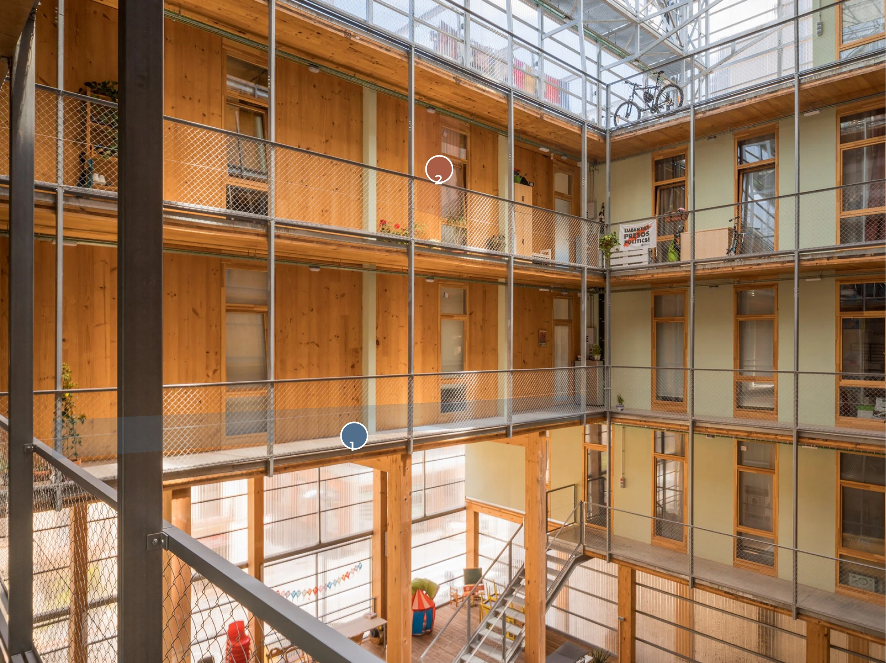
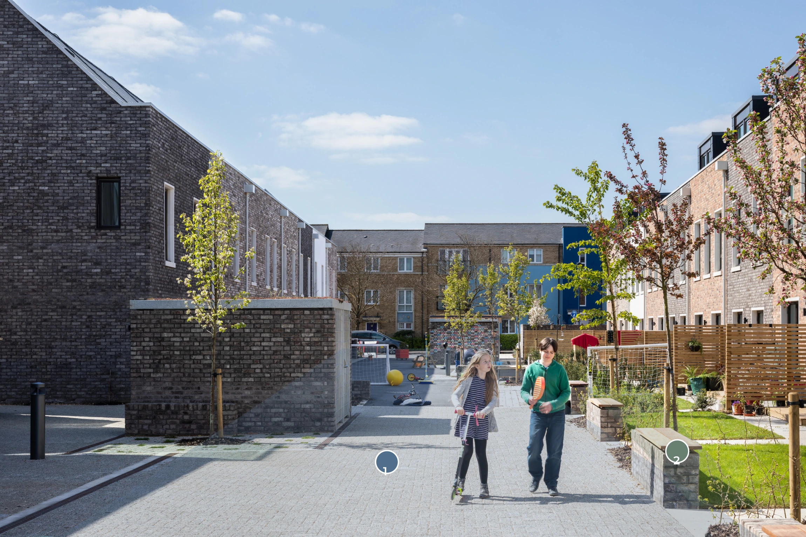

Research
Research method and evidence
My research brings together entries drawn from previous projects, a site visit, conversations with practitioners, surveys, journal articles, videos, podcasts and books. These sources helped me explore how people occupy space through physical, psychological and philosophical perspectives, with a particular interest in domestic life in Australia.
The research began with The Civic Skin and the idea of an occupiable building envelope. It developed into a broader investigation of how apartments could better support everyday life, then focused on downsizing and multigenerational living. Throughout this process, I considered how spaces accommodate different routines, expectations of privacy and choices about spending time with others.
The database records this development and brings different sources into conversation. Reading across built projects, research and accounts of everyday experience helped me develop the project’s position and identify questions to explore through design.
Using precedents as questions for the design
My precedent research focused on single-family and multifamily dwellings, looking closely at their spatial arrangements and how privacy is negotiated within the home. I considered how bedrooms, living areas, entrances and outdoor spaces relate to one another, and how these relationships allow people to share a home while maintaining their own routines.
These studies helped me frame questions to explore within an apartment setting. How can related households live close together and retain independence? How can several generations share a dwelling with space for privacy? I explored these questions through the vertical, horizontal and joint arrangements, considering how connections between homes and spaces within them could support different ways of living.
This also informed my thinking about the occupiable envelope. Balconies, terraces and entrance spaces extend the places available for everyday activities, creating opportunities to spend time together or find space away from shared living areas.
From the research database
Reading the spaces between households
The photographs below are read alongside the architects’ project descriptions and the research database. Colour overlays identify visible spatial features. They are analytical interpretations, rather than measured drawings or evidence of how often residents interact.
Research point 091 / DEFINE
Charles House

Framed openings give adjoining rooms a distinct edge while maintaining a view towards the garden. The photograph supports a reading of spatial sequence; the architect's account, rather than this image alone, establishes how rooms can adapt for different generations.
Research point 092 / MEDIATE
Mahogany House

The courtyard holds an outdoor table between glazed building edges. It offers a way to study the relationship between separate quarters and a shared setting. This reading does not establish the privacy or access arrangements hidden from the photograph.
Research point 093 / DEFINE
3 Generation House

The staircase sits directly beside a dining and kitchen area. BETA documents two stacked apartments and provision for changing household arrangements. This interior view explains the presence of circulation in daily life; it does not show the complete independent entrance or lift journey.
Research point 094 / EXTEND
Veil + Co. House

The covered walkway connects separate parts of the house while openings retain control at the building edge. Its value for Together, Apart lies in the combination of shelter, a clear route and recognisable thresholds. Dimensions and accessibility cannot be established from the photograph.
Research point 095 / MEDIATE
La Borda

Doors, plants and galleries face a shared internal courtyard. The photograph makes the relationship between a dwelling edge and collective circulation visible. It offers a question for the proposal: how can an occupied entrance sit beside a route that remains available to others?
Research point 096 / DEFINE
Marmalade Lane

The lane is framed by housing, planting and low edges used for sitting. The photograph records a shared pedestrian setting, rather than proving how often neighbours interact. For Together, Apart, the useful comparison is between the route through a cluster and the territory immediately beside each home.